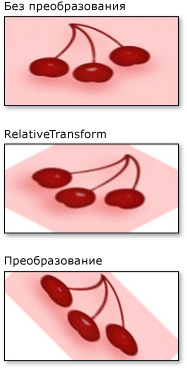

Практическое руководство. Преобразование кисти
В этом примере показано, как преобразовать Brush объектов с помощью двух свойств преобразования: RelativeTransform и Transform.
В следующих примерах используется RotateTransform для поворота содержимого объекта ImageBrush на 45 градусов.
На следующем рисунке показано ImageBrush без RotateTransform, с помощью RotateTransform применяется к RelativeTransform свойство и с RotateTransform применяется к Transform свойство.

Пример
В первом примере применяется RotateTransform для RelativeTransform свойство ImageBrush. CenterX И CenterY свойства RotateTransform объекта устанавливаются равными 0,5. это относительная координата центральной точки этого содержимого. В результате ImageBrush содержимое вращается вокруг своего центра.
//
// Create an ImageBrush with a relative transform and
// use it to paint a rectangle.
//
ImageBrush relativeTransformImageBrush = new ImageBrush();
relativeTransformImageBrush.ImageSource =
new BitmapImage(new Uri(@"sampleImages\pinkcherries.jpg", UriKind.Relative));
// Create a 45 rotate transform about the brush's center
// and apply it to the brush's RelativeTransform property.
RotateTransform aRotateTransform = new RotateTransform();
aRotateTransform.CenterX = 0.5;
aRotateTransform.CenterY = 0.5;
aRotateTransform.Angle = 45;
relativeTransformImageBrush.RelativeTransform = aRotateTransform;
// Use the brush to paint a rectangle.
Rectangle relativeTransformImageBrushRectangle = new Rectangle();
relativeTransformImageBrushRectangle.Width = 175;
relativeTransformImageBrushRectangle.Height = 90;
relativeTransformImageBrushRectangle.Stroke = Brushes.Black;
relativeTransformImageBrushRectangle.Fill = relativeTransformImageBrush;
Warning
It looks like the sample you are looking for does not exist.
<Rectangle Width="175" Height="90" Stroke="Black">
<Rectangle.Fill>
<ImageBrush ImageSource="sampleImages\pinkcherries.jpg">
<ImageBrush.RelativeTransform>
<RotateTransform CenterX="0.5" CenterY="0.5" Angle="45" />
</ImageBrush.RelativeTransform>
</ImageBrush>
</Rectangle.Fill>
</Rectangle>
Во втором примере также применяется RotateTransform для ImageBrush, однако в этом примере используется Transform вместо свойства RelativeTransform свойство.
Чтобы повернуть кисть относительно ее центра, в этом примере CenterX и CenterY свойства RotateTransform абсолютные координаты. Так как эта кисть рисует прямоугольник размером 175 на 90 пикселей, центральная точка прямоугольника имеет координаты (87,5, 45).
//
// Create an ImageBrush with a transform and
// use it to paint a rectangle.
//
ImageBrush transformImageBrush = new ImageBrush();
transformImageBrush.ImageSource =
new BitmapImage(new Uri(@"sampleImages\pinkcherries.jpg", UriKind.Relative));
// Create a 45 rotate transform about the brush's center
// and apply it to the brush's Transform property.
RotateTransform anotherRotateTransform = new RotateTransform();
anotherRotateTransform.CenterX = 87.5;
anotherRotateTransform.CenterY = 45;
anotherRotateTransform.Angle = 45;
transformImageBrush.Transform = anotherRotateTransform;
// Use the brush to paint a rectangle.
Rectangle transformImageBrushRectangle = new Rectangle();
transformImageBrushRectangle.Width = 175;
transformImageBrushRectangle.Height = 90;
transformImageBrushRectangle.Stroke = Brushes.Black;
transformImageBrushRectangle.Fill = transformImageBrush;
Warning
It looks like the sample you are looking for does not exist.
<Rectangle Width="175" Height="90" Stroke="Black">
<Rectangle.Fill>
<ImageBrush ImageSource="sampleImages\pinkcherries.jpg">
<ImageBrush.Transform>
<RotateTransform CenterX="87.5" CenterY="45" Angle="45" />
</ImageBrush.Transform>
</ImageBrush>
</Rectangle.Fill>
</Rectangle>
Описание того, как RelativeTransform и Transform свойства работы, см. в разделе Общие сведения о преобразованиях кистей.
Полный пример см. в разделе Примеры кистей. Дополнительные сведения о кистях см. в разделе Общие сведения о закраске сплошным цветом и градиентом.